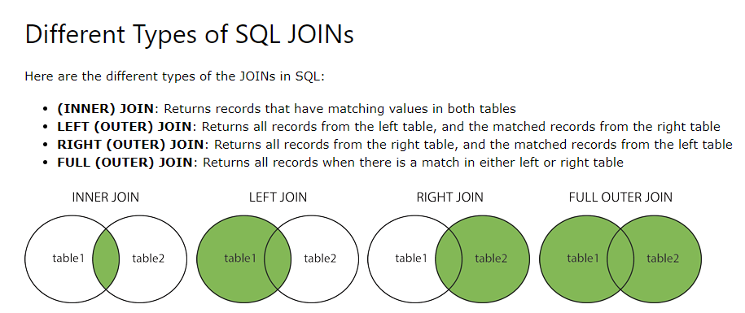

Van W3Schools
Selecteer naam en woonplaats van de personen die in Utrecht wonen.
SELECT person.first_name, person.last_name, address.city
FROM address
INNER JOIN person ON address.id=person.address_id
WHERE address.city = 'Utrecht';
Algemeen -> Bestanden -> Lesmateriaal -> Database